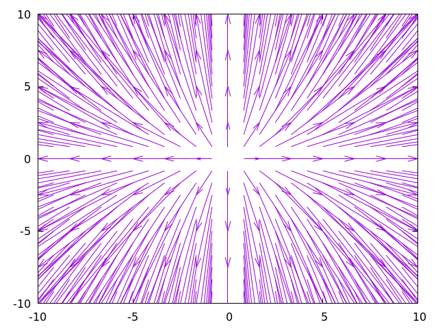
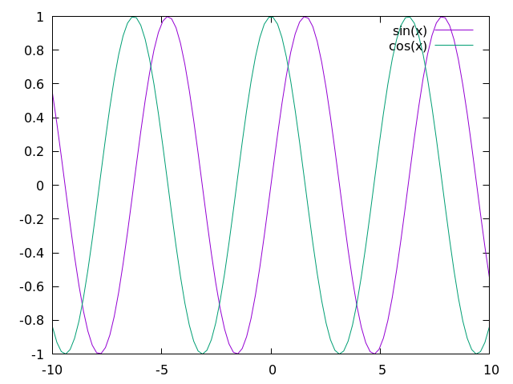

Plotting with gnuplot
The common-doc-gnuplot system allows you to render plots using gnuplot
commands from inside the document.
API
gnuplotgnuplot plot.
pathPath to file where the image will be stored.
Examples
Rendering a direction field:
@begin[path=dir-field.png](gnuplot)
@begin(verb)
set xrange [-10:10]
set yrange [-10:10]
set samples 25
set isosamples 25
set key off
dx(x) = x
dy(x) = 2*x
plot "++" using 1:2:(dx($1)):(dy($2)) w vec
@end(verb)
@end(gnuplot)
The sine and cosine functions:
@begin[path=sin-cos.png](gnuplot)
@begin(verb)
plot sin(x), cos(x)
@end(verb)
@end(gnuplot)
Include Files
The common-doc-include contrib loads external text files into the
document. The path attribute is the path to the file, and the optional
start and end attributes can be used to specify a numeric range of
lines.
API
includeInclude an external file.
pathPath to the local file to include.startThe line where the inclusion will start.endThe line where the inclusion will end.
Examples
The source
code of this documentation uses common-doc-include extensively.
Split Paragraphs
The common-doc-split-paragraphs contrib splits text nodes on double newlines
into separate paragraphs.
API
*paragraph-separator-regex*A regular expression that matches double newlines.
split-paragraphs(node)Recursively go through a document, splitting paragraphs in
text nodes into paragraph nodes.
Examples
(defpackage split-paragraphs-example
(:use :cl :common-doc)
(:import-from :common-doc.split-paragraphs
:split-paragraphs))
(in-package :split-paragraphs-example)
(defvar *document* (make-content
(list
(make-text
(format nil "Some text.~%~%Some "))
(make-bold
(list (make-text "bold text")))
(make-text (format nil ".~%~%Other text.")))))
(dump *document*)
;; content-node
;; text-node
;; "Some text.
;;
;; Some "
;; bold
;; text-node
;; "bold text"
;; text-node
;; ".
;;
;; Other text."
(setf *document* (split-paragraphs *document*))
(dump *document*)
;; content-node
;; paragraph
;; text-node
;; "Some text."
;; paragraph
;; text-node
;; "Some "
;; bold
;; text-node
;; "bold text"
;; text-node
;; "."
;; paragraph
;; text-node
;; "Other text."
TeX
The common-doc-tex contrib is just a couple of macros that expand to TeX
notation. They are useful for two reasons:
- Using them is more semantic than using the resulting
$...$syntax. - The macroexpansion can be overriden.
API
texInline TeX code.
tex-blockBlock of TeX code.
Examples
The following Scriba input:
The derivative of a function @tex(f) at @tex(a), @tex(f'(a)), is
@begin(texb)
f'(a) = \lim_{h \to 0} \frac{f(a+h)-f(a)}{h}
@end(texb)Expands to the following:
The derivative of a function $f$ at $a$, $f'(a)$, is
\(
f'(a) = \lim_{h \to 0} \frac{f(a+h)-f(a)}{h}
\)